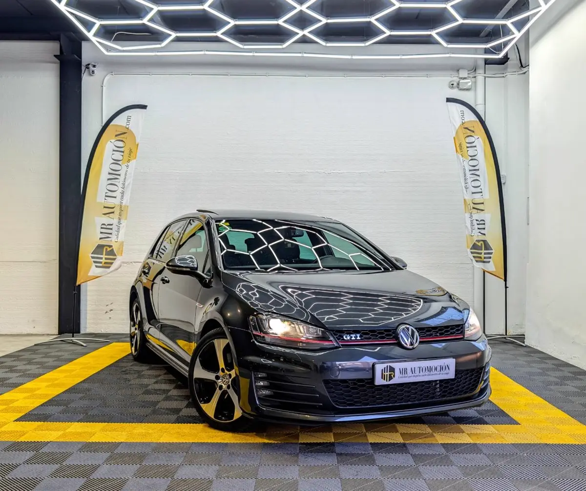

1 / 24Ponemos a la venta este espectacular Volkswagen Golf GTI (MK7) , matriculado en septiembre de 2015 . Una unidad que respeta la esencia pura del modelo al combinar el brillante motor 2.0 TSI de 220 CV , la deseada transmisión manual de 6 velocidades y una configuración de fábrica pensada para los más puristas y exigentes.
Con 172.700 km , este vehículo se presenta en una versátil carrocería de 5 puertas pintada en el elegante y profundo Negro Profundo Efecto Perla . Su aspecto exterior, coronado por el techo solar panorámico y los inconfundibles detalles rojos del frontal GTI, lo convierten en una unidad que no pasa desapercibida, combinando a la perfección deportividad, tecnología punta y uso diario.
Estética Exterior y Chasis Escape modificado. Escape de serie incluido también. Techo Solar Panorámico: De cristal, con apertura eléctrica y deflector, inunda de luz el habitáculo. Llantas de Aleación GTI de 18": El mítico diseño bitono de 5 radios gruesos (modelo Austin). Frenos y Suspensión Deportiva: Discos de freno específicos GTI con revestimiento especial y pinzas en color rojo, acompañados de barras estabilizadoras de reglaje deportivo para un paso por curva perfecto.
Detalles GTI Originales: Parrilla delantera con línea roja y doble salida de escape cromada. Cristales Traseros Oscurecidos: Aportan estética deportiva y aislamiento térmico. Iluminación y Visibilidad Automática: Faros con encendido automático (sensor de luces) y retrovisores asféricos. Sensores de Aparcamiento (ParkPilot): Delanteros y traseros integrados.
Interior Purista y Confort Asientos Deportivos Calefactables: Los míticos asientos tipo bucket con tapicería a cuadros "Clark" y costuras en rojo, equipados con calefacción en las plazas delanteras para el máximo confort en invierno. Volante Deportivo Multifunción GTI: Achatado en la parte inferior, tapizado en cuero perforado.
Climatizador Automático Bizona: Con controles digitales y adaptación climática europea. Molduras Interiores: Acabado tipo panal de abeja en salpicadero y puertas. Pedales Deportivos en Acero Inoxidable y alfombrillas con pespunte en rojo. Elevalunas Eléctricos Confort en las 4 puertas. Tecnología, Asistentes y Seguridad Asistente de Ángulo Muerto (Blind Spot Sensor) con Exit Assist: Monitorización del lateral del vehículo y alerta de tráfico cruzado al salir marcha atrás de un aparcamiento.
Un extra de seguridad vital. Control de Crucero (ACC / Tempomat): Asistente de velocidad de crucero, ideal para mantener el ritmo en autopista y hacer los viajes largos mucho más cómodos. Sistema de Navegación Multimedia: Pantalla táctil a color en la consola central con mapas detallados. Sistema de Sonido Premium: Equipo de audio de alta fidelidad con 8 altavoces distribuidos por el habitáculo y antena "Diversity" para una recepción impecable.
Ordenador de Abordo (MFA): Pantalla central a color en el cuadro de instrumentos. Seguridad Total: Equipado con Programa Electrónico de Estabilización (ESP), sistema de anclajes ISOFIX y un completísimo paquete de airbags (frontales, laterales, de cabeza tipo cortina y airbag de rodilla para el conductor).
Freno de Estacionamiento Eléctrico: Con función Auto-Hold. Tu Compra Segura con MR Automoción Transparencia absoluta con el ADN de fábrica comprobado: ✅ Motor 2.0 TSI (220 CV): Famoso por su elasticidad, empuje y enorme fiabilidad. ✅ Kilometraje Certificado: 172.700 km reales y verificados. ✅ Cambio Manual 6v: La configuración favorita para los que buscan sentir la conducción real. ✅ Garantía Completa de 1 Año y transferencia incluida en el precio.
¿Por Qué Este GTI es Especial? El Equilibrio Manual: Las unidades con caja de cambios manual en los Mk7 están cada vez más cotizadas por quienes buscan la máxima conexión y pureza al volante. Combinación Perfecta: Color Negro Perla, Techo Panorámico, Asientos Calefactables a cuadros y llantas de 18".
Es la configuración exacta que todo fanático de Volkswagen tiene en la cabeza.
| Marca | Volkswagen |
|---|---|
| Modelo | VOLKSWAGEN Golf GTI VII 2.0 TSI 220cv |
| Año | Sep 2015 |
| Kilómetros | 172.700 km |
| Combustible | Gasolina |
| Cambio | Manual |
| Potencia | 220 CV |
| Garantía | 1 Año |
| IVA | NO DEDUCIBLE |
Quizá también te encaje